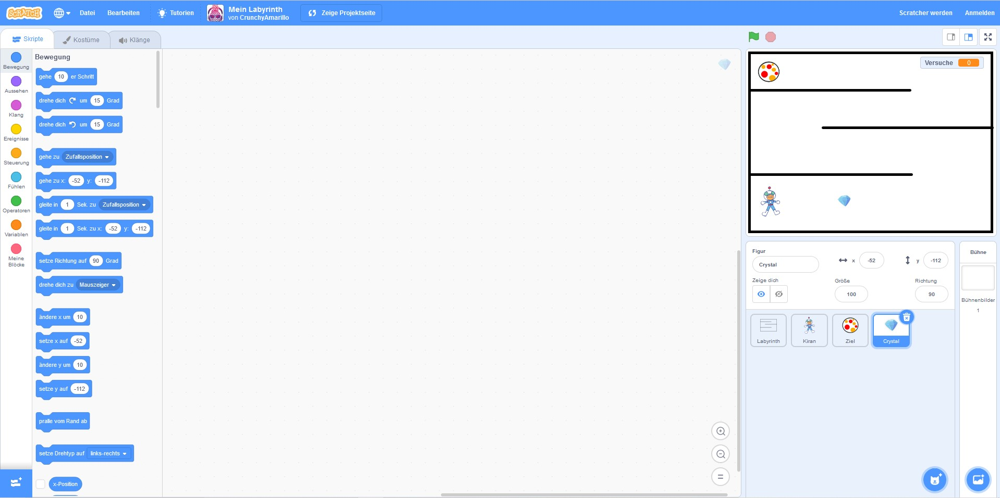
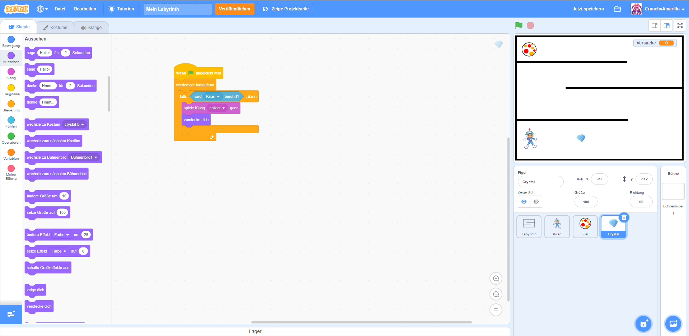
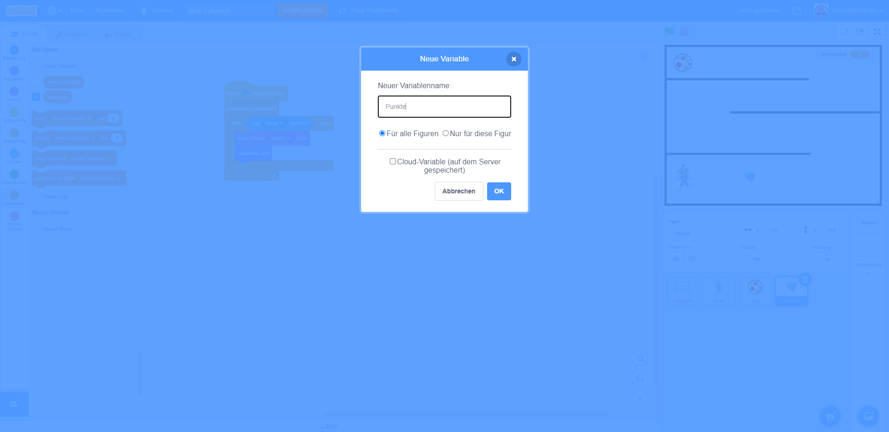
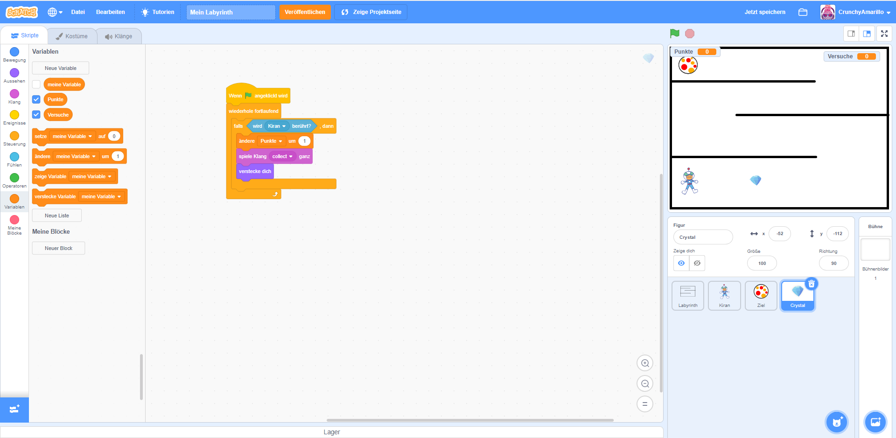
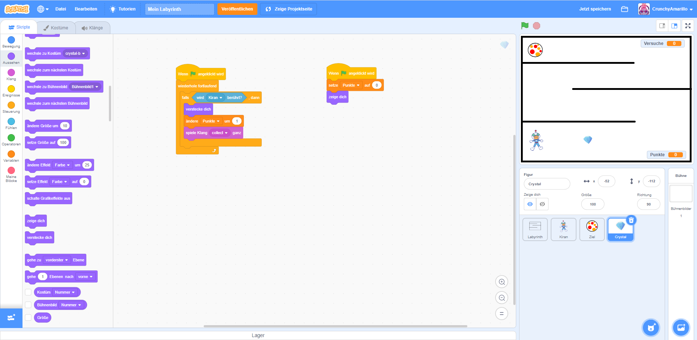
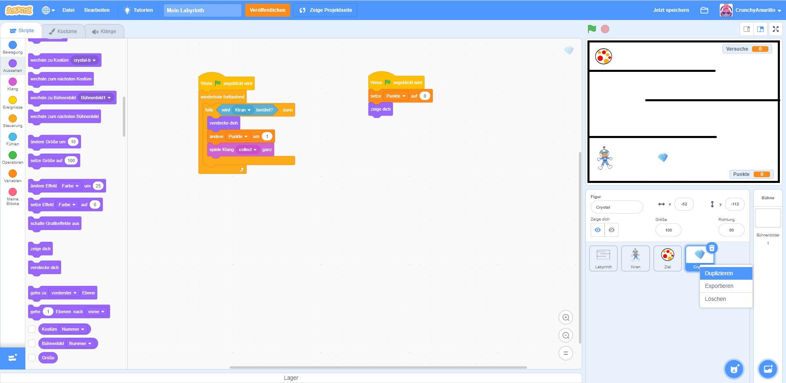
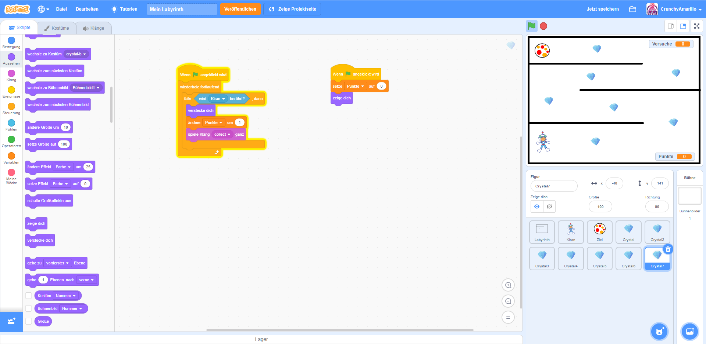

In deinem Spiel funktioniert jetzt schon richtig viel. Und wenn du für heute genug vom Programmieren hast, dann ist das total in Ordnung. Du kannst hier gerne aufhören. Wenn du aber noch etwas Lust hast, weiterzumachen, dann zeige ich dir in den nächsten Schritten noch, wie du deine Spielfigur im Spiel Gegenstände aufheben und so Punkte sammeln lassen kannst.
Als erstes benötigen wir einen Gegenstand, der eingesammelt werden kann. Wähle dafür über das Figuren-Menü wieder eine neue Figur aus. Ich habe mich für den kleinen Diamant namens "Crystal" entschieden. Du kannst auch jede andere Figur verwenden. Platziere die neue Figur wieder über das Vorschaufenster und passe wenn nötig ihre Größe an. 
Nun müssen wir ein eigenes Programm für die Punktfigur schreiben. Diese muss schauen, ob sie von unserer Spielfigur berührt wird. Falls das passiert, dann lassen wir die Punktfigur verschwinden. Das sieht dann so aus, als ob diese von unserer Spielfigur eingesammelt wurde.
Wenn (grüne Fahne) angeklickt wird (Gruppe: Ereignisse)wiederhole fortlaufend (Gruppe: Steuerung)falls < > dann (Gruppe: Steuerung)wird (Mauszeiger) berührt (Gruppe: Fühlen)spiele Klang (...) ab (Gruppe: Klang)verstecke dich (Gruppe: Aussehen)
Ordne die Programmblöcke jetzt, wie im Bild dargestellt, an. Achte darauf, dass du im Block
wird (Mauszeiger) berührt den Wert für (Mauszeiger) durch den Namen deiner Punktfigur
ersetzt.

Da wir gleich noch mehr Punktfiguren einbauen werden, wollen wir mitzählen, wie viele Punktfiguren deine Spielfigur einsammelt. Dafür benötigen wir wieder einen Speicher in dem wir uns dem Punktestand merken. Weißt du noch, was wir dafür benötigen? Genau: Eine Variable. Wechsle nun wieder in die Blockgruppe "Variablen" und lege dort über die Schaltfläche "Neue Variable" einen neuen Speicherplatz an. Nenne die Variable Punkte oder Punktestand. Und platziere sie nach dem Anlegen über das Vorschaufenster wieder an einer Stelle deiner Wahl. 
Jetzt müssen wir nur noch die neue Variable im Programm ergänzen. Ergänze dafür zunächst den Block
ändere [meine Variable] um (1) im vorhandenen Programmcode. Achte darauf, dass du
anstelle von [meine Variable] deine neu angelegte Variable für den Punktestand verwendest.

Außerdem musst du noch dafür sorgen, dass zu Beginn des Spiels der Punktestand immer wieder auf Null zurückgesetzt wird. Auch deine Punktfigur muss sich beim Neustart wieder zeigen, wenn du sie zuvor eingesammelt hast und sie sich versteckt hat. Ergänze dafür folgende Programmblöcke und ordne diese wie im Bild an.
Wenn (grüne Fahne) angeklickt wird (Gruppe: Ereignisse)setze [meine Variable] auf (0) (Gruppe: Variablen) - achte darauf, dass hier der
Name deiner Punktvariable ausgewählt istzeige dich
Test jetzt unbedingt noch einmal den aktuellen Stand deines Spieles aus bevor du mit den nächsten Schritten weitermachst. Kann deine Spielfigur nun die Punktfigur einsammeln, verschwindet diese dabei und dein Punktestand wird hochgezählt?
Damit sich das Spiel für deine Figur auch richtig lohnt, bauen wir nun noch mehr Gegenstände zum einsammeln ein. Dies wird ganz einfach, denn wir werden dafür deine bereits vorhandene Punktfigur nur kopieren. Wähle dazu deine Punktfigur im Figuren-Menü aus und klicke anschließend mit der rechten Maustaste. Es öffnet sich ein Menü. Wähle aus diesem Menü nun den Punkt "Duplizieren" aus. Im Figuren-Menü erscheint nun eine zweite Punktfigur. Diese enthält schon den gleichen Programmcode, welchen du bei der ersten Figur eingebaut hast. Du musst deine neue, zweite Figur nun nur noch im Vorschaufenster an der gewünschten Stelle platzieren. Das war's schon! 
Wiederhole nun den Punkt 6 so oft du willst und baue so viele Gegenstände ein, wie du möchtest. 
Dein Spiel ist nun fertig. Teste es aus, speichere dir deinen Stand und zeige es deinen Freunde oder später daheim deiner Familie. Sei stolz auf dich - du hast das wirklich toll hinbekommen!